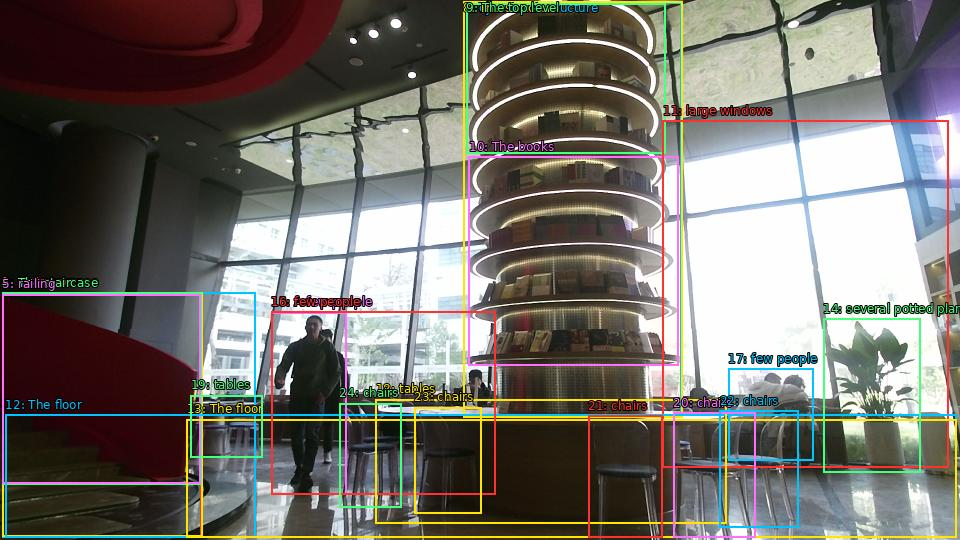

The image shows the interior of a modern building with a large circular staircase on the left side. The staircase has a red railing and is located in the center of the room. On the right side of the image, there is a tall, cylindrical structure with multiple levels. The structure appears to be made of metal and has multiple levels, with the top level being the largest and the bottom level being smaller. The top level is filled with books of different sizes and colors. The books are arranged in a spiral-like pattern, creating a sense of depth and dimension. In the background, there are large windows that let in natural light and offer a view of the city. The floor is made of marble tiles, and there are several potted plants scattered throughout the space. A few people can be seen walking around the room, and a few people are sitting at tables and chairs. The overall atmosphere of the space is bright and airy.

Original · Caption raw · Grounding raw · Koordinate
Številke so lokalni ID regije. Dolge slikovne oznake so skrajšane; spodaj so celotne fraze. Napovedane regije se lahko prekrivajo ali opisujejo skupine.
| ID | Celotna fraza | bbox xyxy |
|---|---|---|
| 1 | staircase | [2.3999998569488525, 292.4100036621094, 201.1199951171875, 536.4900512695312] |
| 2 | The staircase | [2.3999998569488525, 292.4100036621094, 255.83999633789062, 537.030029296875] |
| 3 | The staircase | [2.3999998569488525, 292.4100036621094, 202.0800018310547, 536.4900512695312] |
| 4 | The staircase | [2.3999998569488525, 292.95001220703125, 201.1199951171875, 484.6500244140625] |
| 5 | railing | [2.3999998569488525, 294.0299987792969, 200.1599884033203, 483.030029296875] |
| 6 | a tall | [463.1999816894531, 2.430000066757202, 682.0799560546875, 417.1500244140625] |
| 7 | cylindrical structure | [463.1999816894531, 2.430000066757202, 681.1199951171875, 417.1500244140625] |
| 8 | The structure | [463.1999816894531, 1.8900001049041748, 682.0799560546875, 417.1500244140625] |
| 9 | The top level | [466.0799865722656, 3.510000228881836, 665.760009765625, 153.6300048828125] |
| 10 | The books | [468.9599914550781, 156.87001037597656, 678.239990234375, 365.3100280761719] |
| 11 | large windows | [662.8800048828125, 120.69000244140625, 948.0, 467.3700256347656] |
| 12 | The floor | [5.279999732971191, 414.9900207519531, 956.6399536132812, 537.030029296875] |
| 13 | The floor | [186.72000122070312, 419.3100280761719, 956.6399536132812, 537.030029296875] |
| 14 | several potted plants | [823.199951171875, 318.8700256347656, 920.1599731445312, 472.77001953125] |
| 15 | A few people | [271.1999816894531, 312.3900146484375, 346.0799865722656, 494.9100341796875] |
| 16 | few people | [271.1999816894531, 311.8500061035156, 495.8399963378906, 494.3700256347656] |
| 17 | few people | [728.1599731445312, 368.5500183105469, 813.5999755859375, 460.3500061035156] |
| 18 | tables | [375.8399963378906, 399.33001708984375, 726.239990234375, 523.530029296875] |
| 19 | tables | [190.55999755859375, 395.010009765625, 262.55999755859375, 457.6500244140625] |
| 20 | chairs | [673.4400024414062, 412.83001708984375, 755.0399780273438, 537.030029296875] |
| 21 | chairs | [588.0, 415.530029296875, 662.8800048828125, 537.5700073242188] |
| 22 | chairs | [719.5199584960938, 410.6700134277344, 798.239990234375, 527.8500366210938] |
| 23 | chairs | [414.239990234375, 407.4300231933594, 481.44000244140625, 513.8099975585938] |
| 24 | chairs | [339.3599853515625, 403.1100158691406, 401.7599792480469, 507.8700256347656] |